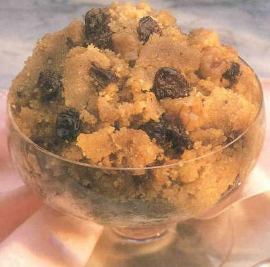

Halava

The most popular if not the most popular dish in the Hare Krishna Movement
Halava is made from milk, butter, gaur (pure cane sugar) and semolina.
However, there are many variations on the ingredients which can be used.
- Milk or Water
- Butter or Ghee
- Semolina
- Gaur or Brown Sugar
- Optional: Double Crean
- Optional: Bananas, Raisins, Cashews etc
- Bring 1 litre of full bodied, fresh, organic cows milk slowly to a rolling boil in a decent sized pot.
- Simultaneously, very slowly, melt approx 125g (half a standard block) of organic cows butter or ghee, in a largeish frying pan.
- After the butter (ghee) has melted, add between 3 and 5 standard cups (250ml) of coarse semolina to the melted butter, depending on how dense you want the halava to be
- Make sure the semolina is absorbed into the butter (ghee) by stirring and folding the mixture. The idea is ti fry the semolina in the butter (ghee). This is a rich dish!
- Optional: Mash down two large bananas with a fork into a puree-like consistency
- Add a decent quantity of gaur (or brown sugar) to the milk and make sure it dissolves nicely
- After some time, when gaur has been assimilated into the hot milk and after the semolina has been well plastered, add the semolina to the milk/gaur mix.
- The semolina will be absorbed into the milk mixture like water poured onto sand so keep folding the mix.
- After the mix has become thickish, pour in the banana puree mash and fold into the thick halava
- The halava is almost ready!
- Make a sincere offering to Lord Krishna, present a sample of the halava, coated with double cream for His pleasure
- Serve halava to your relatives,friends, guests!